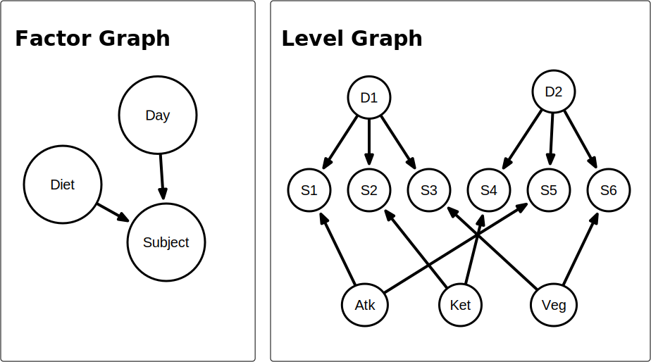
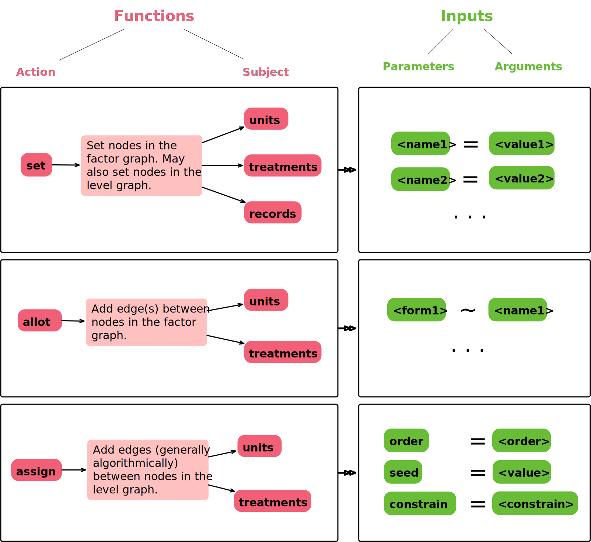
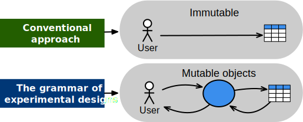
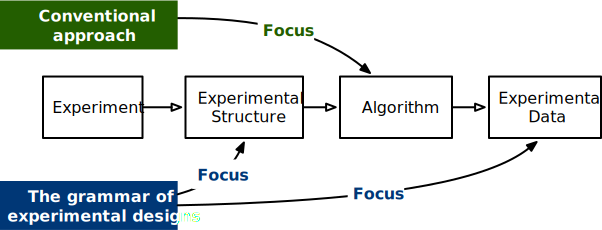
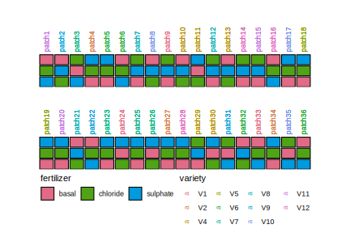
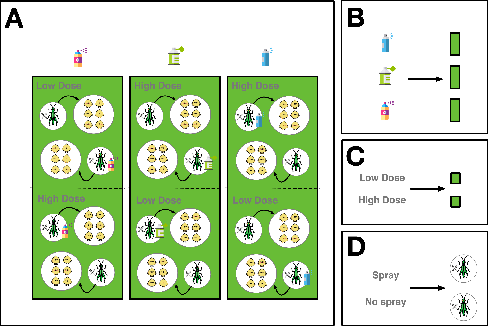

variety <- c("V1", "V2", "V3", "V4", "V5", "V6",
"V7", "V8", "V9", "V10", "V11", "V12")
fertilizer <- c("basal", "sulphate", "chloride")
set.seed(1) # for reproducibility
sample(rep(variety, each = 3)) # variety allocation
replicate(36, sample(fertilizer)) # fertilizer allocationTowards a unified language in experimental designs propagated by a software framework
Emi Tanaka ![]()
Abstract
Experiments require human decisions in the design process, which in turn are reformulated and summarized as inputs into a system (computational or otherwise) to generate the experimental design. I leverage this system to promote a language of experimental designs by proposing a novel computational framework, called “the grammar of experimental designs”, to specify experimental designs based on an object-oriented programming system that declaratively encapsulates the experimental structure. The framework aims to engage human cognition by building experimental designs with modular functions that modify a targeted singular element of the experimental design object. The syntax and semantics of the framework are built upon consideration from multiple perspectives. While the core framework is language-agnostic, the framework is implemented in the edibble R-package. A range of examples is shown to demonstrate the utility of the framework.
Note
This paper can be found on arXiv.
Introduction
Experimental designs offer a rigorous data collection protocol that seeks to achieve pre-defined objectives by imposing purposeful choices and control over experimental variables. The process of deliberation on the final experimental design is just as important, if not more, to identify any potential issues that can be addressed prior to the execution of the experiment. The experimental design literature, however, is often product-oriented rather than process-oriented; in other words, the focus is on the end product (the validity or efficiency of the planned analysis for the final experimental design; or algorithmic aspects to generate the design) rather than the process to the final design. Similar sentiment dates back from decades ago (as echoed in, for example, David M. Steinberg and Hunter 1984b and its discussions in response) with recognition that deriving the experimental context (e.g. defining aims and selecting experimental factors) and communication are important for experimental planning in the real world.
The experimental aim and variables may initially be ill-defined and require iterative refining. In constructing a valid and efficient experimental design, the experimental context is invaluable (see for examples, Bishop, Petersen, and Trayser 1982; Hahn 1984). However, this context can be either lost in dialogue or understood implicitly, and consequently, the full context is often not explicitly transcribed. The downstream effect of not explicitly transcribing the context can be large: misunderstanding of the context, loss of knowledge transfer, inappropriate experimental designs rendering the collected data meaningless for confirmatory analysis, or bad analysis that disregards some significant experimental context (e.g. prediction using a variable that was used to derive the response). If anything, investing in a carefully planned experiment will provide more value than an analysis that attempts to scavenge meaning from a botched up experiment. The experimental context, however, is often stripped away or of an afterthought in many experimental design software systems (Tanaka and Amaliah 2022) thereby providing less room for the users to dwell on possible broader concerns in the experimental design. Such software systems may be an artifact of viewing experimentation in terms of abstract mathematical models, which has the benefits of allowing recognition of common ground in distinct experiments (David M. Steinberg and Hunter 1984b), but at the cost of losing the context.
No experiment is conducted without a person initiating the experiment. Multiple people with different expertise are typically involved in planning and executing an experiment but human communication is a complex process, let alone interdisciplinary communication that compounds the challenge in achieving a shared understanding (Winowiecki et al. 2011). David M. Steinberg and Hunter (1984a) specifically calls out the statisticians “by working to improve their interpersonal skills and by studying some of the literature by pschologists, anthropologists, and others concerning the interplay between technical and cultural change”. Communication strategies can be employed to form mutual understandings, however, these are not strict requirements for generating an experimental design and (for the better or for the worse) communications are largely left to the autonomy of each individual. This means that the process is subject to large variation that can ultimately affect the final experimental design and critically, the relevance and quality of the experimental data.
Coleman and Montgomery (1993) proposed a systematic approach for organizing written documentation of plans for industrial experiments. David M. Steinberg and Hunter (1984b) claimed that continually asking questions about the theory underlying an experiment is important. These practices, and in more general, writing documentation and seeking alternative views, should be a routine practice in experiments (or any data collection activity in fact). However, in the absence of extrinsic motivation, we rely on individual’s intrinsic motivation to adopt better practices. Fishbach and Woolley (2022) proposed that the causes of the intrinsic motivation are characterised by the direct association of the activity and goal. In experimental design, our ultimate goal is to collect experimental data that can be used as empirical evidence to satisfy the experimental aim. This goal can be achieved without any of the aforementioned practices. Consequently, better practices of experimental design require the consideration of factors to increase the motivation to adopt those practices.
The main contribution of this article is a computational framework for constructing an experimental design based on a declarative system that encapsulates experimental structures in a human-centered interface design, with justification of the framework from multiple perspectives. The core framework exposes the intermediate processes that make up the final experimental design, using a cognitive approach that possibly addresses some aforementioned challenges. Section 2 provides some background and defines terminology to explain the proposed framework described in Section 3. Section 4 demonstrates the utility of the framework using illustrative examples and Section 5 concludes with a discussion.
Background
In this section, I outline some concepts, many of which transcends the field of experimental design that are relevant to the proposed framework presented in Section 3.
Grammarware
A grammar combines a limited set of words under shared linguistic rules to compose an unlimited number of proper sentences. In information technology, computational objects governed by a set of processing rules constitute a grammar. Klint, Lämmel, and Verhoef (2005) coined the term “grammarware” to refer to grammar and grammar-dependent software from the perspective of engineering. Some examples of grammarware used prominently in statistics are described next.
Wilkinson (2005) proposed the concept of “the grammar of graphics” as an object-oriented graphics system that declaratively builds quantitative graphics by specifying relatively modular components (data, statistical transformation, scale, coordinate system, guide and graphical layers that include information about graphical primitives and mapping of data variables to aesthetic attributes), assembling a scene from specifications stored as an object in a tree structure, and then displaying it by translating the assembled object into a graphical device. The most popular interpretation of the grammar of graphics is the ggplot2 package (Wickham 2016) in the R language (R Core Team 2020), but variations exist in other languages as well, such as Gadfly (Jones et al. 2018) in Julia (Bezanson et al. 2017) and plotnine (Kibirige et al. 2022) in Python (Van Rossum and Drake 2009). The realization of the grammar of graphics aids users to flexibly build unlimited graphs from a limited set of “words” (functions).
Another grammar is Structured Query Language (SQL), which is a declarative language used to query and manipulate data. SQL statements include special English keywords (e.g. select, inner join, left join, where, and group by) to specify the query in the identified database. SQL statements can include nested queries such that the result of the previous query is piped into the next query. A similar language was employed in the dplyr package (Wickham et al. 2022) in R, referred to as “the grammar of data manipulation” by the authors. The core functions in dplyr require both the first input and output to be objects of the class data.frame (i.e., data in a tabular format), which allows functions to be easily piped in a fashion similar to nested queries in SQL. Each function is designed to perform a single task. The function names correspond to English words, similar to the keywords in SQL.
The widespread use of these declarative languages is perhaps a testament to the usefulness of these approaches. For more details and examples, readers are recommended to look at the vignettes and documentation of the packages.
Communication Strategies
An experiment is a human endeavour that generally involves more than one person. Successfully completing an experiment typically hinges on the communication between multiple people with their own expertise. Let us consider a scenario where four actors are involved in an experiment:
- the domain expert who drives the experimental objective and has the intricate knowledge of the subject area,
- the statistician who creates the experimental design layout after taking into account statistical and practical constraints,
- the technician who carries out the experiment and collects the data, and
- the analyst who analyses the experimental data and help interpret it.
The actors are purely illustrative and in practice, multiple people can take on each role, one person can take on multiple roles, and a person is not necessarily a specialist in the role assigned (e.g. the role of the statistician can be carried out by a person whose primarily training is not in statistics). The statistician and analyst may be the same individual but the roles are explicitly differentiated to signal that this is not always the case. All roles can be performed by a single individual.
The scenario can begin with the domain expert coming up with a hypothesis or question and recruiting a statistician to help design the experiment. Before a statistician can produce the design layout, they must converse with the domain expert to understand the experimental objective, resources, practical constraints and other possible nuances that might influence the outcome of the experiment. There may be several communications before reaching a shared understanding. The statistician produces the final experimental design along with an analysis plan. Once the design layout is produced, these may be passed to a technician to carry out the experiment as per intended and collect the data. The analyst then extracts information, perhaps using the analysis plan by the statistician, from the collected data with the help of the domain expert for the interpretation. Each actor plays a vital role in the experiment; if even one actor fails in their role, then the whole experiment could be in jeopardy, and in the worst case scenario, resources go to complete waste. Even in this simple scenario, we can see that there are many possible interactions between people with every chance of “human error” in the communication.
How might we improve this interdisciplinary communication? Bracken and Oughton (2006) highlighted the importance of language in interdisciplinary research and insisted interdisciplinary projects must allocate time to develop shared vocabularies. Winowiecki et al. (2011) employed scenario building techniques as a tool for interdisciplinary communication to promote structured dialogue to brainstorm particular aspects of the problem. Ideally, we would like to employ a systematic approach that abstracts the problem (and the solution) into a shared understanding.
Not all experiments involve more than one person. In the special case where only a single individual is involved, intra-personal communication to internalize their experimental understanding must still take place, and externalizing this understanding by transcribing or otherwise is still important for the future self and others that wish to validate the experimental data. Indeed, Nickerson (1999) conjectures reflection on one’s own knowledge and evaluation or justification of one’s views as some possible countermeasures to overimputing one’s knowledge to others, thus mitigating misunderstandings.
Terminologies in Experimental Design
The field of experimental design is large, and its domain application (e.g., biology, psychology, marketing, and finance) also large. Numerous terminologies are used to describe various aspects or components of the experiment. Some terms apply only to particular domains; therefore, their meaning is not commonly understood across domains; e.g., stimuli are often treatments in behavioural science; cluster and block can be used interchangeably – the former term is more likely used in clinical trials. Terms like experimental unit (smallest unit that independently receives the treatment), observational unit (smallest unit in which the measurement is recorded on) and treatments (a set of conditions allocated to experimental units) are perhaps more universally understood. In a comparative experiment, a control usually refers to the treatment level that may be the baseline for comparison with other treatment levels (a placebo is a common control in pharmaceutical experiments). A replication (of a treatment level) typically refers to the number of times the treatment level is tested. For an overview, see Bailey (2008), Lawson (2015), Montgomery (2020), or other books on experimental design.
Some terms are used to describe a complete experimental design (e.g., randomised complete block design, balanced incomplete block design, and split-plot design) with limited parameters, such as the number of treatments and replications. These “named” designs are handy to succinctly describe the experimental structure, but it can create a barrier to understanding the experimental structure if you are unfamiliar with it (e.g. do you know what a beehive design is? For those curious, see F. B. Martin 1973).
The experimental structure can be divided into two main substructures: the unit structure and the treatment structure. The unit structure for a completely randomized design is unstructured. A randomized complete block design has a unit structure in which experimental units are nested within blocks. A factorial design is a design in which there is more than one set of treatment factors, where the combination of the treatment levels across those factors compose the whole set of treatments; in such a case, we say that the treatment has a factorial structure. A fractional factorial experiment is an experiment in which only a subset of treatment factor combinations is observed.
In industrial experiments, experimental factors are largely classified into control (or primary) factor, constant factor, and nuisance factor (Coleman and Montgomery 1993; Viles et al. 2008). The control factors here are equivalent to the treatment factors. The constant factors are those that are maintained at the same level throughout the experiment, and nuisance factors are those that cannot be controlled. A run typically refers to a complete replicate of an experiment.
The terminology in experimental design is certainly diverse. The presented terms thus far represent only a fraction of terms used. This complicates any notion of building a “unified language” to form a common understanding.
The Grammar of Experimental Designs
In an object-oriented programming (OOP) system, the objects are basic (and relatively modular) components of the system that contain data and code. The grammar of experimental designs, referred simply as “the grammar” henceforth, is a computational framework that employs the OOP system that considers experimental design as a working object that users progressively build by encapsulating the experimental structure declaratively by defining basic experimental components. This section describes the external abstraction of the framework and its contrast to other systems. The application of the grammar is shown in Section 4.
Components of the Grammar
As discussed in Section 2.3, the terminology for experimental design is diverse. In forming the grammar, we must formulate objects and their methods such that they are relatively modular building blocks for the final experimental design (see Section 2.1 for other grammarwares). The guiding principles for determining the components of the grammar are that the terms have to be:
- meaningful to a diverse set of people,
- reflective of fundamental actions, thoughts or factors in experiments, and
- atomic (i.e., cannot be inferred from the composite of other terms).
In the grammar, we describe terms fundamentally by considering every categorised entity (physical or otherwise) that may be (directly or indirectly) linked to the experimental unit to be a factor. Every factor in the system is assigned an explicit role that is stored as a class. The three primary roles of a factor, as defined in Table 1, are treatment, unit and record. The treatment and unit are encoded as separate classes as these are always semantically distinguished in a comparative experiment. A nuisance (or uncontrollable) factor or any responses can be encoded as a record class. Under the abstraction in Table 1, factors such as blocks, clusters, experimental units, observational units, and experimental run are all just units. Arguably, the small finite number of classes makes it easier to form a shared understanding and limits the introduction of jargon. The grammar uses the relational links between factors to infer other roles of the factor as described next.
| Role/Class | Definition | Examples |
|---|---|---|
| treatment | A factor that is of primary interest and under complete control by the experimenter. | Vaccine in vaccine trials. Drug in pharmaceutical experiments. Variety in plant improvement programs. |
| unit | Any categorised entity (physical or otherwise) that is under some control by the experimenter. | Patient in clinical trials. Block in glasshouse experiments. Time in longitudinal experiments. Spatial index (e.g. row and column) in crop field trials. |
| record | An observed or uncontrollable factor in the experiment. | Responses from observational units. Traits like sex, gender, height, age, and so on of an individual (note some of these may be used as a blocking factor, therefore should be units in that instance). |
The relationship between factors assigns an implicit role; e.g., if a treatment factor is allocated to a plot factor, then the plot is an experimental unit. The implicit roles are summarized in Table 2. Users are not required to be explicit about the implicit roles, instead they are required to be explicit about the relationships of factors.
| Explicit role of A | Explicit role of B | A –> B relationship | Implicit role for B |
|---|---|---|---|
| unit | unit | B is nested in A | Nested unit |
| treatment | unit | B is applied to A | Experimental unit |
| record | unit | B is measured on A | Observational unit |
In the grammar, experimental designs are considered objects with two forms: a graph form or a tabular form. The graph form represents an intermediate construct of an experimental design as a pair of directed acyclic graphs (DAGs) representing the high-level and the low-level relationships (referred to as a factor graph and a level graph, respectively). More specifically, in the factor graph, the nodes are factors and the edges are high-level relationships, while in the level graph, the nodes are levels and the edges are the low-level relationships. The direction of the edges specifies the hierarchy between the nodes. An example of the graph form is shown in Figure 1.

The tabular form represents the final version of the experimental design in a rectangular array where rows are the smallest observational units and the columns are the variables or factors. This tabular form, referred to as the design table, is a typical output of an experimental design software.
The grammar begins with the initialization of the experimental design object with an empty graph form. The user then declaratively manipulates the object based on a small number of functions, as shown in Figure 2. The main actions are to either set the scene (factors in the experiment), allot a factor to another factor, or assign the levels to other levels algorithmically. The actions are concurrently specified with the subject (primary roles); therefore, it is immediately clear from the syntax which element of the experimental design object is targetted. The actions, allot and assign, are made distinct as the former is usually made explicit in dialogue and the latter is almost always algorithmically derived. This concrete syntax may be altered based on the domain specific language (as demonstrated later with the R language in Section 4). The object builds up information on the experiment as the users specify the factors and their relationships. When a user completes their specification, then they can signal the conversion of the graph form to a tabular form. At this stage, if the specification is valid (nodes in the level graph can all be linked to one row), then it will render the design table.

set units sets nodes with the unit class). The parameters <name1> and <name2> are user-defined factor names (more than two can be defined as necessary) with the associated arguments <value1> and <value2> corresponding to the structure of the factor (the number of levels, relationship with other factors, etc). The parameter <form1> is specified symbolically (e.g. trt1:trt2 is the combination of the treatment factors trt1 and trt2) alloted to the factor <name1>. Again more allotment can be specified as necessary. The argument <order> is the algorithm that assigns the treatments or units subject to the <constrain> (typically the nesting structure). The <value> for the seed ensures that the design is reproducible.It should be noted that not all experiments are comparative, i.e., some experiments can have no treatment factors. The grammar does not require specification of treatment factors although at the minimum requires units to be specified.
Differences to Other Systems
By treating an experimental design as a mutable object, the grammar allows a bi-directional interaction between the user and the object, allowing users to inspect and progressively build the experimental design. This bidirectional interaction is in contrast to many systems that consider only unidirectional interactions, as illustrated in Figure 3, where the major action of the user is to specify a complete experimental design with no recourse to think about individual components of the experiment.

Another key difference between the grammar and conventional approaches for the computational generation of an experimental design, as illustrated in Figure 4, is that the grammar explicitly defines the experimental structure and output. This does not mean that the grammar cannot optimise the algorithmic assignment of the treatment to units; the user can substitute the corresponding step as they see fit. In this sense, the grammar is complementary to many existing experimental design algorithms.

Furthermore, the grammar allows for various inputs that are fundamental to experiments in a cognitive manner. In other words, the grammar treats the specification of the experimental design as a structured dialogue. Consider a scenario where a statistician writes in their notes during the meeting with the domain expert where together they decide on the structure of the experiment. Under the conventional approach, when the statistician enters the structure into the computational system, the statistician has to reformulate this, generally void of the context, to fit the system. By contrast, the grammar is a more natural translation for the statistician to map their notes into the computational system. Indeed, the pre-design master guide sheet by Coleman and Montgomery (1993) suggests a number of elements (e.g. response and treatment factors) that should be captured in these notes that can be directly mapped in the grammar.
The example in Section 4.1 shows the difference in code between the systems to specify the experimental design. While the code is more verbose in the grammar, it should be clearer in communicating the context of the experiment.
Applications
The grammar presented in Section 3 necessitates some alterations when translated for a particular domain specific language. For brevity, the translation of the grammar to the edibble R-package (Tanaka 2023) in order to fit the particular nuances of the R language and the user community is not described in this paper. This section aims to demonstrate the utility of the grammar. Instructive guide for the usage of the edibble R-package is reserved for other avenues. The supplementary material shows the full design table outputs and further explanations of the code.
In the following subsections, three examples of various flavours are shown to illustrate the grammar of experimental designs described in Section 3. Section 4.1 demonstrates a comparison of different programming approaches to achieve the same end result. Section 4.2 deals with a complex nested design showing how this can be specified using the grammar. Finally, Section 4.3 shows an example where the system can be modified to deal with unbalanced cases.
Classic Split-Plot Design
Consider the classical split-plot experiment introduced by Fisher (1950) where a land was divided into 36 patches, on which 12 varieties were grown, and each variety planted in 3 randomly chosen patches. Each patch was divided into three plots, with the plots randomly receiving either the basal dressing only, sulphate or chloride of potash. In constructing this experiment, the statistician may have first randomized the allocation of varieties to the patches with 3 replicates each and then permuted the 3 fertilizer levels to the plots within each patch. A random instance of this design is shown in Figure 5. The original experiment measured the yield of each plot. Hypothetically, the technician may also record the biomass for each patch.

The construction of this design can follow in a procedural programming manner where the 12 varieties with 3 replicates are permuted, followed by replicating 36 times the permutation of 3 fertilizer levels. In the R language, this may be coded like below. There may be further wrangling to produce a design table.
Alternatively, the structure of this design is well known as the “split-plot design”. The statistician may recognize the structure to this “named” design, and generate this design via a functional programming approach where the function name relates to the name of the design. Below, we used the function design.split() from the agricolae R-package (de Mendiburu 2021). Only two sets of treatment factors are expected in a split-plot design, which is reflected in the input parameter names trt1 and trt2. Notice that it is not immediately clear without further interrogation which treatment factor is applied to the patches or the plots; in fact, the units need not be defined.
agricolae::design.split(trt1 = variety,
trt2 = fertilizer,
r = 3,
seed = 1)In the grammar, the design is progressively defined using a series of composable operations as shown below.
library(edibble)
1des1 <- design("Fisher's split-plot design") %>%
2 set_units(patch = 36,
plot = nested_in(patch, 3)) %>%
3 set_trts(variety = 12,
fertilizer = c("basal", "sulphate", "chloride")) %>%
4 set_rcrds(yield = plot,
biomass = patch) %>%
5 allot_trts(variety ~ patch,
fertilizer ~ plot) %>%
6 assign_trts(seed = 1,
order = c("random", "random")) %>%
7 serve_table()- 1
- The design object is initialised with an optional title of the experiment.
- 2
-
The units
patchandplotare defined. Thepatchhas 36 levels whileplothas 3 levels for eachpatch. - 3
-
The treatments are
varietywith 12 levels andfertilizernamed as “basal”, “sulphate” and “chloride”. - 4
-
The records in the data collection will be
yieldfor eachplotand thebiomassfor eachpatch. - 5
-
The treatments are allot to units. Specifically,
varietytowholeplotandfertilizertoplot. - 6
-
The treatments are then randomly assigned to corresponding unit specified in the allotment. The
seedis specified here so we can replicate the results. It recognises that theplotis nested in thepatchand therefore uses this by default to constrain the order that the treatment is allocated. Specifically, the treatment order for both allotment are random. - 7
- In the last step, we convert the intermediate design object into the final experimental design table.
See Table 1 of the Supplementary Material for the full design table. The Supplementary Material also shows the intermediate outputs and explanation of other functions not shown here.
Complex Nested Design
Consider next the experiment in P. A. Martin, Johnson, and Forsyth (1996) aimed to investigate if insecticides used to control grasshoppers affected the weight of young chicks of ring-necked pheasants, either by affecting the grass around the chicks or by affecting the grasshoppers eaten by the chicks. A description and illustration of the experiment is in Figure 6.

Another random instance of the design in Figure 6 is specified in the grammar as follows.
des2 <- design("Complex nested factorial design") %>%
1 set_trts(insecticide = 3,
dose_level = c("low", "high"),
food_type = c("sprayed", "unsprayed")) %>%
2 set_units(week = 3,
strip = nested_in(week, 3),
swath = nested_in(strip, 2),
pen = nested_in(swath, 2),
chick = nested_in(pen, 6)) %>%
3 allot_trts(insecticide ~ strip,
dose_level ~ swath,
food_type ~ pen) %>%
assign_trts(seed = 1) %>%
serve_table() - 1
- Here the treatment is defined first with 3 levels of insecticide, two dose levels (low and high) and two food types (sprayed or unsprayed).
- 2
- The units are defined next. The experiment is run over 3 weeks. For each week, there are 3 strips used. Each strip is split into two swathes. Each swath has two pens. Each pen contains 6 chicks.
- 3
- Next we define the allotment of treatments to units. The insecticide is alloted to strip, the dose level to swath and the food type to pen.
See Table 2 of the Supplementary Material for the full design table.
Unbalanced Factorial Design
Previous examples have conveniently used equal numbers of replicates for each treatment, however, this is often not the case in practice. The proposed system can cater for experiments with an unbalanced number of treatments.
Suppose we consider the first four motion sickness experiments reported by Burns (1984). The study, as shown in Figure 7, was a collection of separate experiments. In this sense, the treatment (acceleration and frequency) was pre-assigned and completely confounded with the experiment.
This unbalanced design in Figure 7 is specified in the grammar as:
des3 <- design("Motion sickness incidence") %>%
1 set_units(experiment = 4,
subject = nested_in(experiment,
1 ~ 21,
2 ~ 20,
3 ~ 29,
4 ~ 59)) %>%
2 set_trts(frequency = c(0.167, 0.250),
acceleration = c(0.111, 0.222)) %>%
3 allot_trts(frequency:acceleration ~ experiment) %>%
4 assign_trts(order = "systematic") %>%
serve_table()- 1
- We specify that there are 4 experiments. Experiments 1, 2, 3 and 4 had 21, 20, 29 and 59 subjects, respectively.
- 2
- There were two treatment factors: frequency with two levels (0.167 and 0.250) and acceleration with two levels (0.111 and 0.222).
- 3
- The combination of the treatment factors are assigned to each experiment.
- 4
- The allocation of the treatment is systematic.
See Table 3 of the Supplementary Material for the full design table.
Discussion
Multiple people with different expertise are typically involved in planning and executing an experiment but communication is rarely easy or seamless, especially across people from different domains. In designing experiments, we ought to consider the time (Bracken and Oughton 2006) and methods, such as structured dialogues (Winowiecki et al. 2011), to form a shared understanding. A unified language in experimental designs will aid in rapidly fostering mutual understanding among involved parties. In this paper, I propose to leverage the design of the software interface to promote a standardized grammar that govern the expression of experimental designs in a structured approach.
A new framework, called “the grammar of experimental designs”, was presented as a process-based tool. The primary novel aspect of this framework is that an experimental design is treated as a mutable object that is progressively altered based on the explicit specifications of fundamental experimental components. This approach exposes the intermediate process to constructing the final experimental design, thus providing a greater opportunity to notice any broader concerns in the experimental designs. This in turn can encourage the investigation or remedy of the experimental plan before its execution.
A number of functionalities are not discussed or demonstrated in this paper in order to focus on the general framework rather than on specific features. These functionalities include the specification of intended observational records (including responses) of units; embedded data validation for data entry; simulation of observational records; diagnostics and visualization of designs. Abstract syntax and internal object representation are also only briefly discussed. These functionalities and internals warrant full discussion in separate papers. Furthermore, an extended explanation of the edibble package will be presented in other avenues. The framework does not address all possible experimental structures but extensions of the framework, such as situations with an undetermined number of levels or complex conditional structures, can be envisioned as future research directions.
This framework may be compelling for several reasons, some of which have been outlined previously. First, explicit specification raises the cognitive awareness of the experimental context and intention for both the user and the reader. Second, it encourages encoding of information as a machine-readable data, thereby allowing for further interrogation, manipulation or even exportation to multiple formats. Third, it allows for the partial specification of the experimental structure and permits the reuse of the structure.
A recipe approach is often used for existing software to generate randomized designs. A recipe or a named design describes an end product and does not permit different processes to reach to a similar end product. The grammar requires users to describe a particular course of actions, thereby intentionally directing users to be explicit. This way the software does not hinder the ability for users to encode more information.
The proposed framework is purposefully designed such that it can be extended and improved by other developers. For example, the assignment of treatments (to units) can be substituted with alternative methods. Arguably this step is the most algorithmically difficult part of the process, and is the subject of many experimental design research. The default assignment is currently simplistic. There will be many cases in which the default system will not be suitable or is highly inefficient. The goal of the grammar, however, is not to generate the most efficient or optimal design for every experimental structure, which is an impossible feat without user guidance. The goal of the grammar is to standardize the specifications of the experimental structure so that we can more easily form a shared understanding. As any other language, the grammar of experimental designs has the potential to evolve.
In principle, the framework promotes good practice by requiring an explicit specification of the elements of the experimental design. However, principle alone is not sufficient to encourage mass adoption. There are several possible extensions that make the framework attractive despite its verbose specifications. These include immediate benefits such as ease of adding data validation and automated visualization – both of which are the subject of future papers. Fishbach and Woolley (2022) suggested that immediate benefits can increase intrinsic motivation. My hope is that these downstream features will eventuate in the mass adoption of the framework, or even a similar framework, which aids in the transparency of the experimental design process. We all gain from better experimental practices. It is in this mass adoption, where we come to share a unified language in experimental designs, that I believe will aid in communication and result in the collective adoption of better experimental designs. The practice of experimental design requires holistic consideration of the total experimental process, including that of psychological processes that translate to practice.
Supplementary Material
The supplementary material contains the full design table outputs from the examples in Section 4 along with further explanations of the code.
Acknowledgement
This paper uses knitr (Xie 2015), rmarkdown (Xie, Allaire, and Grolemund 2018) and Quarto (Posit 2023) for creating reproducible documents. The code presented uses version 0.1.3 of the edibble package available on CRAN. The latest development of edibble can be found at https://github.com/emitanaka/edibble.
The supplementary material can be found here.
References
Bailey, Rosemary A. 2008. Design of Comparative Experiments. Cambridge University Press.
Bezanson, Jeff, Alan Edelman, Stefan Karpinski, and Viral B Shah. 2017. “Julia: A Fresh Approach to Numerical Computing.” SIAM Review 59 (1): 65–98. https://doi.org/10.1137/141000671.
Bishop, Thomas, Bruce Petersen, and David Trayser. 1982. “Another Look at the Statistician’s Role in Experimental Planning and Design.” The American Statistician 36 (4): 387–89.
Bracken, L J, and E A Oughton. 2006. “’What Do You Mean?’ the Importance of Language in Developing Interdisciplinary Research.” Transactions 31 (3): 371–82. https://doi.org/10.1111/j.1475-5661.2006.00218.x.
Burns, K. C. 1984. “Motion Sickness Incidence: Distribution of Time to First Emesis and Comparison of Some Complex Motion Conditions.” Aviation, Space, and Environmental Medicine 55 (6): 521–27.
Coleman, David E, and Douglas C Montgomery. 1993. “A Systematic Approach to Planning for a Designed Industrial Experiment.” Technometrics 35 (1): 1–12.
de Mendiburu, Felipe. 2021. Agricolae: Statistical Procedures for Agricultural Research. https://CRAN.R-project.org/package=agricolae.
Fishbach, Ayelet, and Kaitlin Woolley. 2022. “The Structure of Intrinsic Motivation.” Annual Review of Organizational Psychology and Organizational Behavior 9 (1): 339–63. https://doi.org/10.1146/annurev-orgpsych-012420-091122.
Fisher, Ronald A. 1950. Statistical Methods for Research Workers. 11th ed. Oliver and Boyd.
Hahn, Gerald J. 1984. “Experimental Design in the Complex World.” Technometrics 26 (1): 19–31.
Jones, Daniel C., Ben Arthur, Tamas Nagy, Shashi Gowda, Godisemo, Tim Holy, Andreas Noack, et al. 2018. “GiovineItalia/Gadfly.jl: V0.7.0.” Zenodo. https://doi.org/10.5281/zenodo.1284282.
Kibirige, Hassan, Greg Lamp, Jan Katins, gdowding, austin, Florian Finkernagel, matthias-k, et al. 2022. “has2k1/plotnine: See the [changelog](https://plotn ine.readthedocs.io/en/stable/changelog.html#v0-9-0 ).” Zenodo. https://doi.org/10.5281/zenodo.7124918.
Klint, Paul, Ralf Lämmel, and Chris Verhoef. 2005. “Toward an Engineering Discipline for Grammarware.” ACM Transactions on Software Engineering and Methodology 14 (3): 331–80. https://doi.org/10.1145/1072997.1073000.
Lawson, John. 2015. Design and Analysis of Experiments with R. CRC Press.
Martin, Frank B. 1973. “Beehive Designs for Observing Variety Competition.” Biometrics 29 (2): 397–402. https://doi.org/10.2307/2529404.
Martin, Pamela A., Daniel L. Johnson, and Douglas J. Forsyth. 1996. “Effects of Grasshopper-Control Insecticides on Survival and Brain Acetylcholinesterase of Pheasant ( Phasianus Colchicus ) Chicks.” Environmental Toxicology and Chemistry / SETAC 15 (4): 518–24. https://doi.org/10.1897/1551-5028(1996)015<0518:EOGCIO>2.3.CO;2.
Montgomery, D. 2020. Design and Analysis of Experiments. 10th ed. Wiley.
Nickerson, Raymond S. 1999. “How We Knowand Sometimes Misjudge: Imputing One’s Own Knowledge to Others.” Psychological Bulletin 125 (6): 737–59.
Posit. 2023. Quarto: An Open-Source Scientific and Technical Publishing System. https://quarto.org/.
R Core Team. 2020. R: A Language and Environment for Statistical Computing. Vienna, Austria: R Foundation for Statistical Computing. https://www.R-project.org/.
Steinberg, David M., and William G. Hunter. 1984a. “[Experimental Design: Review and Comment]: Response.” Technometrics 26 (2): 128. https://doi.org/10.2307/1268106.
Steinberg, David M, and William G Hunter. 1984b. “Experimental Design: Review and Comment.” Technometrics 26 (2): 71–97.
Tanaka, Emi. 2023. edibble: Designing Comparative Experiments. https://CRAN.R-project.org/package=edibble.
Tanaka, Emi, and Dewi Amaliah. 2022. “Current State and Prospects of R-Packages for the Design of Experiments.” https://doi.org/10.18637/jss.v096.i01.
Van Rossum, Guido, and Fred L. Drake. 2009. Python 3 Reference Manual. Scotts Valley, CA: CreateSpace.
Viles, E., M. Tanco, L. Ilzarbe, and M. J. Alvarez. 2008. “Planning Experiments, the First Real Task in Reaching a Goal.” Quality Engineering 21 (1): 44–51. https://doi.org/10.1080/08982110802425183.
Wickham, Hadley. 2016. ggplot2: Elegant Graphics for Data Analysis. Springer-Verlag New York. https://ggplot2.tidyverse.org.
Wickham, Hadley, Romain François, Lionel Henry, and Kirill Müller. 2022. dplyr: A Grammar of Data Manipulation. https://CRAN.R-project.org/package=dplyr.
Wilkinson, Leland. 2005. The Grammar of Graphics. 2nd ed. Springer.
Winowiecki, Leigh, Sean Smukler, Kenneth Shirley, Roseline Remans, Gretchen Peltier, Erin Lothes, Elisabeth King, Liza Comita, Sandra Baptista, and Leontine Alkema. 2011. “Tools for Enhancing Interdisciplinary Communication.” Sustainability: Science Practice and Policy 7 (1): 74–80. https://doi.org/10.1080/15487733.2011.11908067.
Xie, Yihui. 2015. Dynamic Documents with R and Knitr. 2nd ed. Boca Raton, Florida: Chapman; Hall/CRC. https://yihui.org/knitr/.
Xie, Yihui, J. J. Allaire, and Garrett Grolemund. 2018. R Markdown: The Definitive Guide. Boca Raton, Florida: Chapman; Hall/CRC. https://bookdown.org/yihui/rmarkdown.